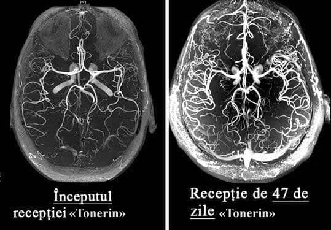
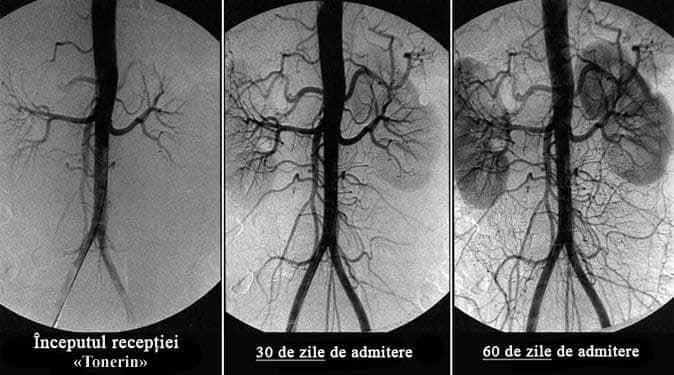

Ce să faci dacă te doare capul, ai zgomot în urechi și îți amorțesc membrele?
Semne de distonie a vaselor cerebrale
Viorel Lucescu
Distonia vaselor cerebrale este o afecțiune patologică în care tonusul vaselor și circulația normală a sângelui în țesuturile creierului sunt perturbate. În acest articol, puteți citi despre cauzele, mecanismele și simptomele acesteia la apariția cărora este timpul să bateți alarma. Precum și despre complicațiile severe ale acestei boli insidioase și despre abordarea modernă a tratamentului disponibil tuturor.
Distonia vaselor cerebrale afectează performanța întregului organism. Din cauza alimentării insuficiente cu sânge a creierului, scade performanța generală, apare slăbiciune, iar sistemele importante ale corpului încep să funcționeze defectuos.
Simptomele inițiale ale distoniei vaselor cerebrale sunt:
- Dureri de cap;
- Zgomot în urechi;
- Slăbiciune generală, apatie, somnolență;
- Capacitate redusă de muncă;
- Tulburări de somn, insomnie;
- Dereglări de memorie;
- Senzație de amorțeală la nivelul membrelor;
- Edeme ale mâinilor și picioarelor;
- Senzație de întuneric în fața ochilor;
- Scăderea vederii;
- D ereglări hormonale în organism.
Distonia vaselor cerebrale este primul semn al „înfundării” totale a vaselor organismului cu colesterol, afecțiune numită ateroscleroză. Vasele creierului sunt cele mai delicate și subțiri, astfel încât acestea suferă în primul rând.
În baza tratamentului circulației sanguine a vaselor cerebrale se află curățarea vaselor întregului organism de reziduurile acumulate. Plăci de colesterol, trombi și săruri de calciu.

Cu ce pot fi curățate vasele de sânge acasă?
Restabilirea circulației sanguine și curățarea vaselor de sânge este un proces complex. Aceasta implică toate vasele corpului și îmbunătățește de multe ori calitatea vieții.
Aflați cum să vă curățați vasele de sânge, cum să scăpați de sute de boli „cronice” și cum să obțineți încă 20 de ani de viață sănătoasă din acest interviu detaliat.
- Cât de periculoasă este distonia vaselor cerebrale?
- Care sunt amenințările ignorării simptomelor?
- De ce vasodilatatoarele prezintă pericol?
- Care este legătura dintre vasele creierului, excesul de greutate, articulații și potență?
- Cum putem restabili circulația sângelui și întări vasele de sânge de sine stătător?
La aceste întrebări ne-a răspuns medic specialist cardiolog, absolvent al Facultății de Medicină și Farmacie “Grigore T. Popa”, Iași, fondator al clubului de sănătate și sport Vivertine Iași, medic specialist cardiolog, dl {_authorName:Nicolae Cupăreanu}.
Dl {_authorName:Cupăreanu} este considerat unul dintre cei mai buni cardiologi din România. El a tratat peste 18000 de pacienți numai în anul 2023.
Dl {_authorName:Cupăreanu} este convins că speranța medie de viață în România poate fi mărită până la 89-93 ani, ca în țările dezvoltate. Dacă începem să explicăm pe larg cetățenilor importanța curățării vaselor după 40 de ani.
Cât de periculoasă este distonia vaselor cerebrale?
- Dl {_authorName:Cupăreanu}, ce simptome ar trebui să ne atragă atenția în primul rând?
- În stadiul inițial, distonia vaselor cerebrale se manifestă nepronunțat. Majoritatea nu acordă atenție simptomelor, iar simptomele în sine apar, apoi dispar.
Primele semne ale tulburării circulației cerebrale:
- Zgomotul din urechi care apare fără motiv
- Musculițe în fața ochilor
- Senzație de amorțeală a degetelor și a feței
- Dureri de cap în regiunea frunții și tâmplelor
- Salturi bruște ale tensiuni (se întunecă în fața ochilor la schimbarea bruscă a poziției corpului)
- Îngheață picioarele și mâinile
Odată cu deteriorarea vaselor de sânge, se dezvoltă unele boli cronice permanente:
- Hipertensiune arterială
- Dureri articulare, musculare, crampe la nivelul membrelor
- Tahicardie
- Varice și tromboză venoasă
- Slăbirea potenței, mărirea prostatei la bărbați
- Încetinirea metabolismului și afectarea metabolismului grăsimilor
În pofida faptului că nu este o boală „acută”, deteriorarea circulației sanguine a creierului este foarte insidioasă. În cele din urmă, mai devreme sau mai târziu, aceasta duce la accident vascular cerebral, dar până atunci torturează omul, ucigând încet funcțiile vitale ale organelor și provocând un întreg buchet de diferite boli.
Toate aceste boli sunt consecințe. Consecințe ale aterosclerozei vasculare, depunerii pe pereții vaselor a plăcilor de colesterol și a trombilor. Spre regret, doar persoane unice de la noi acordă atenție curățării vaselor, continuând să sufere ani de zile și să bea pastile inutile pentru bolile lor cronice.
- Da, din păcate, oamenii noștri nu sunt informați despre importanța curățării vaselor.
- Nu e vina lor. Despre ce putem vorbi când 99 din 100 de medici români nu au auzit nimic despre nutraceutice și necesitatea utilizării lor pentru curățarea vaselor de sânge.
În țările dezvoltate: SUA, Canada, Japonia, Elveția timp de 11 ani a fost legiferat să fie oferite nutraceutice o dată la 4 ani fiecărui cetățean după 40 de ani. Pe alocuri gratuit, pe alocuri din contul asigurărilor medicale. Acest lucru este controlat de stat.
Care sunt amenințările ignorării simptomelor?
– Ce se întâmplă dacă ignorați simptomele „înfundării” vaselor și tratați numai bolile evidente?
Bolile vor progresa, în pofida oricărei terapii medicamentoase. Da, ele pot fi „atenuate” cu pastile, puteți merge la chirurgi, dar cauza nu dispare nicăieri.
Și cu cât mai multe reziduuri se acumulează în vase, cu atât vor fi mai grave consecințele.
La înfundarea vaselor cerebrale de grad mediu sau mediu-sever, apar următoarele patologii:
Cu un grad sever de contaminare a vaselor, cel mai adesea pot avea loc accident vascular cerebral și paralizie totală sau parțială.
De ce vasodilatatoarele prezintă pericol?
- Este adevărat că vasodilatatoarele fac mai mult rău decât bine?
— Da. Medicamentele vasodilatatoare sunt bune pentru situațiile de urgență. Administrarea lor frecventă creează o sarcină uriașă asupra pereților vaselor.
Sărmanele vase suferă foarte mult din cauza „straturilor” acumulate de colesterol, care corodează pereții epiteliului, făcându-l mai subțire. Iar vasodilatatoarele dilată vasele de sânge, creând o suprasolicitare a pereților. Dacă în acest moment vasul nu rezistă și se rupe, atunci are loc un accident vascular cerebral.
Din acest motiv, vă sfătuiesc foarte atent să luați medicamente vasodilatatoare și numai în cazuri excepționale.
Care este legătura dintre vasele creierului, excesul de greutate, articulații și potență?
- De ce, în cazul dereglării circulației sanguine a creierului, femeile adesea se îngrașă, bărbații pierd „puterea” și fac prostatită, iar articulațiile și coloana vertebrală încep să se distrugă?
- Când vasele creierului sunt „înfundate” din cauza plăcilor, atunci acesta primește mai puține substanțe nutritive. În fiecare an, după vârsta de 40 de ani, creierul primește cu 5% mai puține substanțe nutritive.
Prin urmare, până la vârsta de 50 de ani, alimentarea creierului se înrăutățește în jumătate.
Ce face creierul atunci când nu primește suficiente substanțe nutritive?
1. El crede că suntem înfometați și ne impune să mâncăm.
Dar, indiferent cât de mult mâncați, vasele înfundate nu permit livrarea cantităților suficiente de substanțe nutritive către creier. Dar acestea trebuie duse undeva. Și corpul le pune la păstrare, apar depuneri de grăsime.
2. În modul „foame”, creierul crede că murim, prin urmare, dezactivează funcțiile „inutile” pentru supraviețuirea organismului.
Funcția de reproducere nu este necesară pentru un creier înfometat, astfel încât funcția de potență și libidoul scad. Scade producția hormonului masculin testosteron. Aceasta, la rândul său, provoacă o creștere în dimensiuni a prostatei și dezvoltarea prostatitei.
Funcția de recuperare este foarte consumatoare de energie și creierul o „dezactivează” până la vremuri mai bune. Țesuturile articulațiilor nu mai regenerează: cartilajul, oasele, scade producția de lichid sinovial (lubrificator articular). Apar dureri articulare, osteocondroză, artrită.
Cum putem restabili circulația sângelui și întări vasele de sânge?
- Este oare posibil să curățăm vasele de sânge de sine stătător și să restabilim circulația sângelui?
- Da. Acest lucru nu este dificil, dar necesită răbdare și disciplină. Dar merită, și efortul va fi răsplătit.

Institutul de chirurgie vasculară și cardiologie a dezvoltat un preparat unic - nutraceuticul „Tonerin”. Specialiștii Institutului au creat un produs care nu are astăzi analogi. Tonerin este absolut sigur, nu are efecte secundare și poate fi luat fără supravegherea unui medic.
Tonerin curăță vasele de toate tipurile de depozitări:
- Plăci de colesterol
- Trombi
- Săruri de calciu
Rezultatele utilizării Tonerin:
Timp de 1,5 luni de administrare a Tonerin, circulația sângelui se restabilește cu 99,71%
Este important că circulația sângelui se restabilește sistemic: în toate vasele, arterele și capilarele.
Forma a Tonerin este un „know-how”, mândria oamenilor noștri de știință. Aceasta asigură aproape 100% de curățare a vaselor datorită fracțiunilor de CO2 active ale extractelor care pătrund în plăcile de colesterol și le dizolvă din interior.
Prin curățarea vaselor de sânge, Tonerin restabilește alimentația normală a creierului. Începe o reacție în lanț de recuperare a organismului.
Cum acționează Tonerin asupra organismului?
- Tonerin acționează în 3 etape:
1. Elimină depunerile din vasele de sânge
Dizolvă plăcile aterosclerotice, cheagurile de sânge și sărurile de calciu. Mărește lumenul vaselor până la 99,71% din normal și restabilește circulația sângelui.
2. Elimină efectele circulației sanguine defectuoase
Sunt vindecate sau sunt ameliorate în mod semnificativ simptomele a astfel de boli, cum ar fi: hipertensiunea arterială, dureri de cap, vene varicoase, tromboză, hemoroizi, prostatită. Dispare zgomotul din urechi, amețelile, edemele, se îmbunătățește acuitatea vizuală și claritatea gândirii. Se normalizează greutatea și metabolismul lipidic.
3. Sporește rezistența și elasticitatea pereților vaselor de sânge
Acest lucru împiedică formarea de plăci noi și reduce riscul de accident vascular cerebral de 11 ori.
- Cât de des și cât timp trebuie luat Tonerin?
- 1 dată la 5-7 ani, începând cu 40 de ani pentru bărbați și de la 45 de ani pentru femei. Durata curei este de 1,5 luni, în caz de simptome severe ale tulburărilor circulatorii - 2 luni.
Deficitul și programul preferențial
- Din câte știm, Tonerin, a dispărut din majoritatea farmaciilor? De ce și cum poate fi obținut acum?
- Din păcate, da. De la începutul acestui an, Tonerin nu mai este livrat în farmacii.
Cauza conflictului a fost lăcomia rețelelor de farmacii care au cerut producătorului Tonerin să le plătească câte 195 L pentru fiecare unitate de produs vândută! Adăugând la prețul producătorului un adaos comercial imens (costul unei cure cu Tonerin în unele farmacii din România a ajuns până la 1700 L), farmaciștii au vrut să introducă o taxă suplimentară de la producător.
Reprezentanții farmaciilor se justifică spunând că un așa adaos comercial le permite să supraviețuiască. La urma urmei, Tonerin este un medicament care este cumpărat o dată la 5-7 ani. Și, în plus, după curățarea vaselor cu Tonerin, persoana nu mai are nevoie de medicamentele care le lua în mod constant! Oamenii renunță la remedii de scădere a tensiunii, încetează să mai cumpere produse pentru durerea articulară. Reduce semnificativ consumul de medicamente pentru astm si diabet. Și acest lucru duce la pierderi pentru farmacii. Din acest motiv, acestea insistă la stabilirea unui preț extrem de mare pentru Tonerin.
Ca rezultat producătorul Tonerin a desfăcut contractele cu toate farmaciile și a trecut la distribuție numai prin Internet. În principiu, este corect. Vedeți și dvs., fără plată pentru închirierea spațiilor pentru comercializare, fără mită farmaciilor. De aceea Tonerin este acum mult mai accesibil decât atunci când era vândut în farmacii.
Programul preferențial „Vase curate”
 Centrul Medical de Cercetare Pentru Chirurgie Cardiovasculară
Centrul Medical de Cercetare Pentru Chirurgie Cardiovasculară

Preț preferențial pentru "Tonerin"
Institutul nostru, în colaborare cu Centrul Medical de cercetare pentru chirurgie cardiovasculară, poșta României și producătorul Tonerin, în cadrul proiectului de telemedicină (medicină prin internet), a lansat un program preferențial.
Obțineți Tonerin chiar acum!
Pentru a obține Tonerin la un preț special de 159 L, aveți nevoie doar de un telefon mobil.
Introduceți numărul dvs. în formularul de cerere oficial și faceți clic pe butonul „Obține Tonerin”. Farmacistul nostru vă va contacta pentru a clarifica detaliile de livrare a produsului.
Important! Doar 1 cerere pentru 1 număr de telefon!
Acum, cererile sunt acceptate și procesate 24 de ore. Dar, din cauza solicitărilor sporite, este posibil să trebuiască să așteptați puțin.
ADĂUGAT ! Din cauza numărului mare de comenzi, am fost nevoiți să limităm condițiile de desfășurare a promoției.
În prezent, promoția este valabilă până la inclusiv. Până la terminarea ei, produsul original „Tonerin” poate fi comandat prin intermediul FORMULARULUI DE MAI JOS!
Atenție!
Asigurați-vă că site-ul are hologramă de protecție:

Holograma de protecție este 100% garanție a calității. Aceasta indică faptul că vă aflați pe site-ul oficial, vă va fi trimis un Tonerin original și vi se vor oferi consultanța și asistența necesare.

Tonerin este CEL MAI BUN REMEDIU DIN TOATE. Inițial utilizam reserpina, apoi alte medicamente. Știu că sunt preparate depășite. La medici nu-mi place să merg, dar nici nu mă deranja pre tare. Luam ocazional, atunci când creștea tensiunea sau mă durea inima. Dar apoi, brusc, au încetat să mă mai ajute. Apoi m-am dus la doctor și el mi-a recomandat să încerc un nou preparat Tonerin (un medic tânăr care, probabil, încă mai crede că medicina ar trebui să fie pentru oameni, nu pentru stoarcerea banilor!). Tonerin m-a ajutat din prima, tensiunea imediat a scăzut, dar totuși am urmat cura așa cum mi-a recomandat medicul. După 3 săptămâni am uitat ce este hipertensiunea arterială. Varicele care m-a chinuit 10 ani a dispărut! Mai aveam și o problemă ginecologică, acum nici urmă de ea nu a mai rămas. Mă simt minunat, ca în tinerețe!
Am cumpărat o cură de 2 luni la preț de 1950 L. Încă anul trecut, când Tonerin se vindea în farmacii. Și vă spun sincer, nu regret! Deși pare scump, dar am făcut deja economii anul acesta pe alte medicamente aproape de aceeași valoare. Și cât de ușor îmi este să trăiesc, nu poate fi măsurat în bani! La 52 de ani mă simțeam ca un bătrân neajutorat. Nu plecam departe fără tensiometru și pastile hipotensive, credeam că nu voi ajunge până la pensionare, capul mă durea în mod constant, de multe ori îmi venea un gând nebun - de-aș scăpa mai repede de toate... Când colo, timp de 2 luni, am uitat de tensiune, mă simt un BĂRBAT tânăr și sănătos (sper că înțelegeți despre ce vorbesc)! Prin urmare, chiar dacă nu veți avea parte de un program preferențial și nu veți prinde reduceri, comandați neapărat, la orice preț, nu veți regreta! Simt că în curând Tonerin va fi interzis în România, deoarece foarte multor firme le încurcă ițele și le privează de profit.
Mulțumesc! Am reușit să comand un pachet prin formularul de pe site pentru doar 159 L! Voi încerca.
Ce sunt 30 000 de ambalaje? Este o picătură într-un ocean...
Mă miră cei care vor totul pe degeaba!!! Toată lumea vă este datoare! Când mi-am dat seama că am nevoie de Tonerin, nu am așteptat să mi-l dea cineva pe degeaba! M-am împrumutat și l-am cumpărat! Am dat 1750 L! Și aici, nu puteți găsi 159 L, așteptați gratuit! Rușine! Ar fi trebuit să vă fie rușine să scrieți așa ceva.
Nu judeca și nu vei fi judecat! Nu știi ce situație are o persoană! Poate că e cu handicap, de unde să ia banii?
Mamei mele au început să-i amorțească degetele, un doctor cunoscut a sfătuit-o să curețe vasele de sânge. I-a indicat „statine”, dar am citit că pot provoca cancer la rect și am decis să nu riscăm. În cele din urmă, am aflat din întâmplare despre Tonerin. Au cumpărat Tonerin la negru, am dat 1550 L pe o cură. Dar rezultatul nu s-a lăsat așteptat, după câteva zile am observat o îmbunătățire semnificativă a tenului, părului, unghiilor, stării generale a organismului, iar în a doua săptămână, degetele de la mâini aproape au încetat să mai amorțească. Timp de 1,5 luni, amorțeala a trecut complet + s-a normalizat tensiunea. Diferența privind starea generală de sănătate e de la pământ la cer, mama a devenit foarte energică, memoria s-a îmbunătățit, nu o mai dor articulațiile chiar și pe vreme rea. În concluzie, produsul este super, recomand tuturor!
Am tratat hipertensiunea cu acest preparat. Hipertensiunea a fost mult timp partenerul meu de viață. De-a lungul timpului, s-au mai asociat diabetul zaharat și problemele renale. Memorie foarte proastă și scăderea vederii. Toată viața m-am tratat cum am putut. Nimic nu m-a ajutat cu adevărat. Am decis să încerc Tonerin. Prima dată am comandat medicamente pe internet, dar totul a fost simplu.
Mulțumim pentru comentariu! Eu sunt o „admiratoare fidelă” de ignorare a spitalelor, cu atât mai mult că, de obicei, medicii prescriu sau medicamente scumpe, sau „de pe altă lume” (îmi amintesc că nu am putut găsi niște picături pentru ochi „neobișnuite” nici într-o farmacie din București). Și nu întotdeauna vindecătorii „văd” miezul problemei. Deja de un an, periodic, dimineața îmi amorțesc mâinile. Datorită recenziei dvs. voi încerca Tonerin. Chiar dacă mâinile amorțesc din alt motiv, vasele de sânge oricum trebuie curățate! Sau chiar pur și simplu să bei un produs natural. Mulțumesc!
Tonerin tratează foarte bine tensiunea, aproape în fiecare zi spre seara mă durea capul, îmi venea să plâng de durere, analgezicele nu mă ajutau deloc. Mai târziu am aflat că mă durea capul de la tensiune. Dar nu contează. O colegă mi-a recomandat Tonerin, am reușit să cumpăr un ambalaj la preț de 159 L, eram foarte fericită. În două luni am devenit o persoană diferită! Mi-am dat seama că, înainte de curățarea vaselor, de fapt, nici nu am trăit! Capul nu mă mai doare, varicele a trecut și CEL MAI IMPORTANT - AM PIERDUT 20 KG! De la 94 kg la 74! Iată ce înseamnă normalizarea circulației sangvine! Fără echivoc recomand Tonerin tuturor!
Am auzit despre această metodă de curățare a vaselor, dar nu am încercat-o încă... Cred că acum este timpul să încerc =)
Am riscat și nu regret deloc. Dacă există probleme cu vasele de sânge, îl voi recomanda cu încredere. Nu au existat efecte secundare, iar de rezultat am rămas foarte mulțumită
Am hipercolesterolemie, mi-a fost prescrisă PITAVASTATINĂ. Nu am rezistat nici măcar o săptămână să îl iau, toți ganglionii limfatici s-au mărit, mai ales cei cervicali, nu puteam întoarce capul. În plus, a scăzut vederea. Literalmente, în 4 zile de administrare a apărut un fel de încețoșare a vederii. Medicul a spus că este un efect secundar al statinelor, este descris în reacții adverse. Mi-a prescris un înlocuitor, Rosuvastatină, dar mi-a fost frică să-l iau. Acum vreau să încerc Tonerin, compoziția naturală nu ar trebui să provoace reacții adverse? În special dacă mai pot câștiga și o reducere.
Tonerin este cel mai bun remediu pentru hipercolesterolemie! Nu am avut nicio reacție adversă la el, de fapt, nici nu are cum provoca efecte adverse, este absolut natural. Cu excepția alergiei, dar foarte rar.
Cea mai bună soluție pentru hipercolesterolemie este DIETA!
Dieta va ajuta la protejarea împotriva formării de depozite noi, dar pe cele vechi nu le afectează. Credeți-mă, am trecut prin această aventură cu dietele de mai multe ori.
Am avut colesterolul peste 6,8, ceea ce este foarte mult pentru mine. Amețeli permanente, salturi de tensiune și sănătate precară. Iar după 2 luni, valoarea a ajuns la 3,4. Dar cel mai important este că mă simt bine! Acum pot nici sa nu dau analiza. Mi-am dat seama ce este un sânge „slab” și cum e când capul funcționează bine :). Oamenii care mă întâlnesc spun că chiar și vorbirea s-a îmbunătățit! Totul s-a schimbat.
Semnez sub fiecare cuvânt, Tonerin este unul dintre cele mai minunate, economice și eficiente medicamente! Dacă îl compari cu Crestor este de vreo 10 ori mai ieftin, iar rezultatul durează de 10 ori mai mult și nu are efecte adverse. Comandați cât există un program preferențial, noi îl folosim cu toții